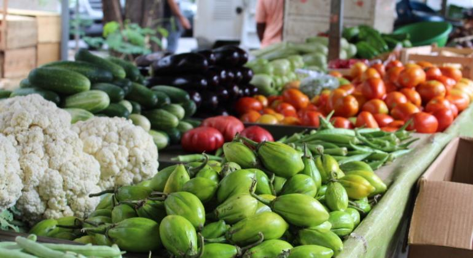
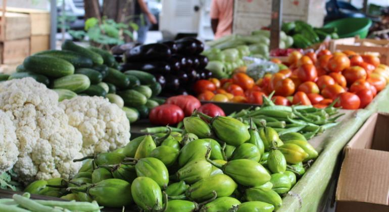

Uma relação essencial
O campo e a cidade são realidades que se complementam. Enquanto o campo produz os alimentos e matérias-primas, a cidade oferece tecnologia, serviços e mercados. Juntos, formam um ciclo vital para nossa sociedade.
Participe do ProjetoAlimentação
O campo abastece as cidades com alimentos frescos e saudáveis, enquanto a cidade oferece mercados e canais de distribuição.
Cultura
Tradições rurais e urbanas se misturam, criando uma rica diversidade cultural que enriquece a todos.
Sustentabilidade
A conexão campo-cidade é fundamental para desenvolver soluções sustentáveis de produção e consumo.
Galeria de Conexões
 

.jpg)
.jpg)

Depoimentos
"Como produtor rural, vejo como é importante essa conexão com a cidade. É gratificante saber que nosso trabalho alimenta tantas famílias." - João, agricultor
"Morando na cidade, valorizo cada vez mais o trabalho no campo. Participar de feiras de produtores me conectou com a origem dos alimentos." - Maria, urbanista
Como Participar
Junte-se a nós para fortalecer essa conexão:
- Visite feiras de produtores locais
- Conheça propriedades rurais próximas à sua cidade
- Participe de eventos que celebram essa relação
- Compre diretamente de pequenos produtores